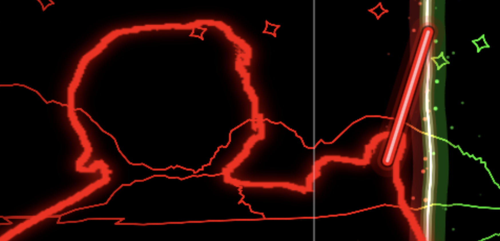
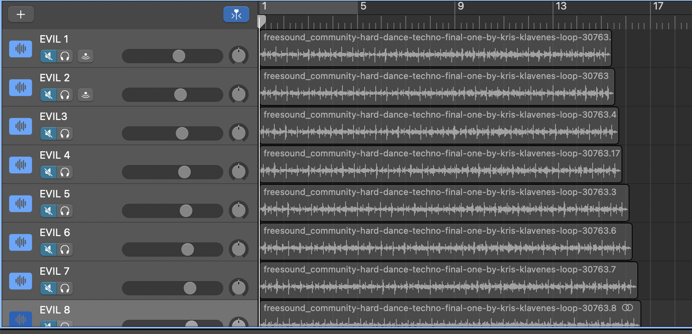
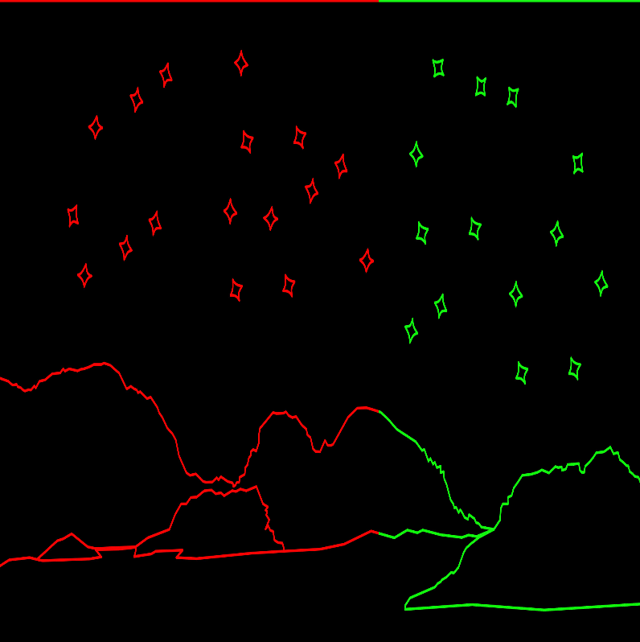
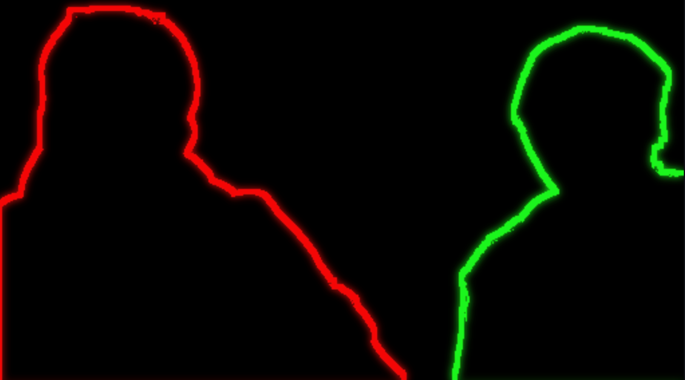
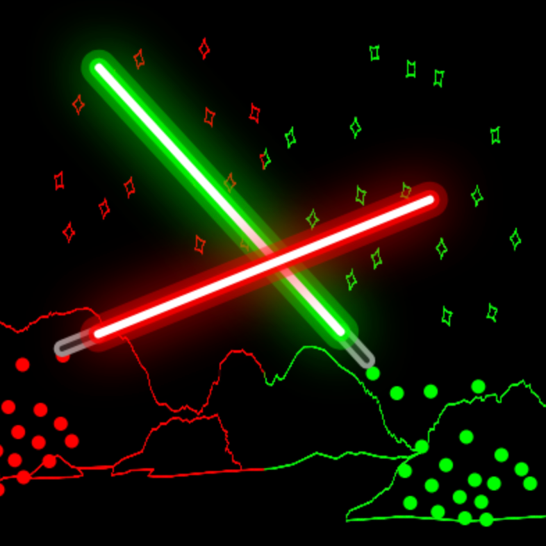

Ege Erdal
Based in Stockholm, Ege Erdal is a creative technologist and interactive systems designer at the intersection of intelligent automation and physical-digital interfaces.
He also builds mixed-reality experiences and experiments with emerging technologies.
-

Glowsticks in the gameplay drawing via hand-tracking
-

AUDIO
-

BACKGROUND
-

OUTLINE
-

TRACKING
-
DEMONSTRATION
about
Interactivity is at the heart of the project. We took a gamified approach to explore how sound, movement and visual effects work together to create an immersive experience. The game is made for two players and is built around one side winning, but players can also choose to work together and make music instead.
Audio is the foundation of the rave experience. A DJ scratch plays a key role in making the project recognisable as a rave. The scratch has a strong place in pop culture: it stands for electronic music, and for the idea of someone shaping music live to create an experience.
Behind the project lies Star Wars, a major influence on both the visual design and the narrative of the performance. The name "Sound Wars" itself is a reference to "Star Wars", and the classic theme of good versus evil runs through every part of this creative coding project.